Livres
Si vous êtes arrivé sur cette page, c’est que Dr Peytavin a déclenché votre curiosité !

Introduction
La pollution concerne différents domaines. Le Dr Peytavin et le biologiste Emmanuel Chanut ont décidé d’alerter le lecteur sur les différents risques de la pollution.
Résumé
Extrait de la 4ème de couverture : « Cet ouvrage pratique vous explique les grands principes qui font que l’homme n’échappe pas à son environnement, détaille l’action des polluants sur l’organisme, indique comment limiter votre exposition à la pollution. »
Auteurs
Dr Jean-Louis Peytavin :

Ce diplômé de médecine de Lyon a décidé de se concentrer sur l’écriture. En effet, il a écrit plusieurs ouvrages sur la santé.

Emmanuel Chanut :
Ce diplômé de biologie et écologie a poursuivi son chemin en tant que journaliste scientifique. Il travaille maintenant sur la transmission scientifique et environnementale.